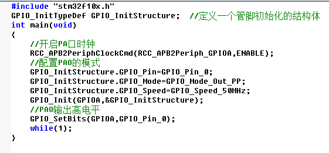
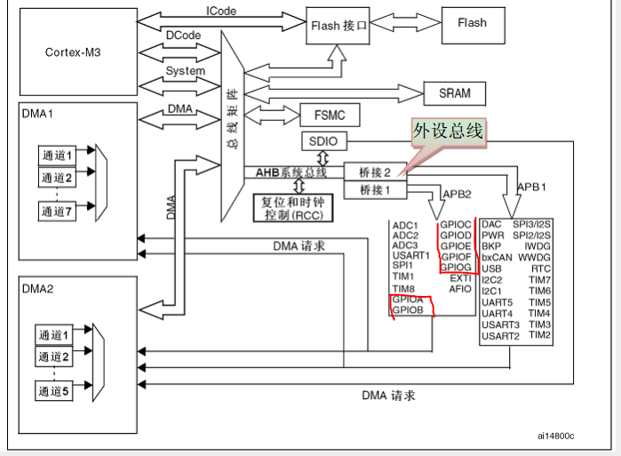
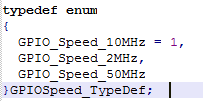
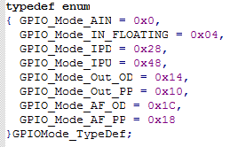

stm32点亮第一个led灯（初学）
创建时间：
2017/4/9 0:05
更新时间：
2017/4/16 15:22
来源：
http://m.blog.csdn.net/article/details?id=24482585
stm32点亮第一个led灯（初学）
作为一名初学stm32的人应该都具备了51单片机的和c语言基础。这是前提。首先一个好的入门视频是非常重要的
在这里，我推荐鑫鑫的stm32教程视频（百度一下就懂了）， 没有打广告的意思（没任何利益关系），我之前看的是李想
的stm32教程，感觉看的有点懵。废话不多说：
第一个抉择：
（I）走库还是走底层？（库就是st公司给你写好的一系列的头文件和各种函数，你只需要调用即可操纵stm32控制各种外设，而底层则需要你自己写一系列的初始化函数，操作函数），个人觉得初学者可以先用库，甚至这样说都用词不准确，因为很大一部分从事开发的人也是直接调用库函数，除非你对效率和功耗方面有很高的要求。为了方便读者，我这里提供了st库的地址：http://pan.baidu.com/disk/home?fr=ibaidu#dir/path=%2F%E5%8D%9A%E5%AE%A2%E8%B5%84%E6%96%99 。
（II）首先你要有个工程文档的模板，这个你看这个视频就ok了（http://pan.baidu.com/disk/home?fr=ibaidu#dir/path=%2F%E5%8D%9A%E5%AE%A2%E8%B5%84%E6%96%99）。创建了这个工程模板之后，以后再做一个项目的时候，你只需拷贝工程模板，再把名字改下，在模板的user文件夹下加入你要写的函数
（III）然后关于stm32的时钟，学过51的朋友很可能很困惑，为什么时钟都要初始化？其实这就体现了stm32功能的强大和灵活（具体的我也说不清，因为我也只是个初学者，菜鸟）。关于stm32的时钟构造你可以参看一下李想视频的相关讲解（这部分我很肯定他），然后自己去下一个stm32的中文资料参照着看，大致知道下stm32时钟的具体构造就ok。
（IV）其次是gpio，这个也是重点，其实gpio就类似于51单片机的io，但是较之51，它的功能更加强大，gpio提供了很多模式，输入模式有模拟输入模式、浮空输入模式、上拉/下拉输入模式以及保留；输出模式分为通用推挽输出模式、通用开漏输出模式、复用功能推挽输出模式、复用功能开漏输出模式，在点亮led灯我们用的是通用推挽输出模式，并且这种方式是比较常用的。gpio分为7个组，GPIOA——GPIOG，其中每一组（比如GPIOA）有0--15个引脚可供使用。
（V）好了，下面直接上程序（main.c文件直接把这个代码码进去）
以下的解释 前提是你已经配置好了工程模板！！
#include "stm32f10x.h"类似于51单片机的"reg51.h",一个很重要的头文件，GPIO_InitTypeDef,这是一个结构体，c语言学的不好的可以去补补课了，我们可以很容易的从它的字面意思知道它是定义了一个GPIO的类型（比如int也是一种类型），在stm32f10x_gpio.h这个文件里我们可以找到（这里提一个技巧：如GPIO_SetBits()函数，那你就去stm32f10x.h这个文件里去找，RCC_APB2PeriphClockCmd()函数你就去stm32f10x_rcc.c文件去找edit->find,当然你也可以直接用库带的帮助文档找）附一张定义GPIO_InitTypeDef的图
至于GPIO_InitStructure,它仅仅只是一个变量名，一个你可以任取的变量名。声明好变量之后按照 “打开时钟->配置->使用”的过程来写代码。
RCC_APB2PeriphClockCmd(RCC_APB2Periph_GPIOA,ENABLE);RCC英文缩写（
Reset and clock control）
这个函数的目的是将GPIOA口的时钟打开，可是为什么是APB2，
答案直接上图：

可以看到APB2控制了所有的GPIO，自然我们要给开时钟的也就是APB2（具体函数意思参见帮助文档）
然后开始配置，事实上，GPIO_Pin、GPIO_Mode、GPIO_Speed，st公司已经给我们定义了枚举类型：（这些定义在stm32f10x_gpio.h可以找到）
 
选择50MHz的原因我不知道是为什么，大概是因为速度快点比较好吧，然后选择GPIO_Mode_Out_PP就是通用推挽输出模式（PUSH-PULL），管脚你自己随意选择
GPIO_Init(GPIOA,&GPIO_InitStructure);是给GPIO初始化，这个具体参照帮助文档，我不太懂
GPIO_SetBits(GPIOA,GPIO_Pin_0)这个函数的意思是将GPIOA中的0引脚置高，如果置低就是GPIO_ResetBits(GPIOA,GPIO_Pin_0)
ok，这样子就结束了，如果你把这个过程理顺了，会发现其实入门真的不难。
我总结一下资源：
http://pan.baidu.com/disk/home?fr=ibaidu#dir/path=%2F%E5%8D%9A%E5%AE%A2%E8%B5%84%E6%96%99
邮箱：444502842@qq.com